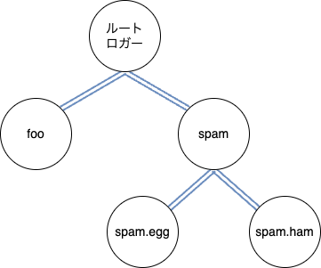
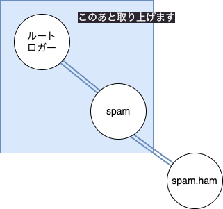
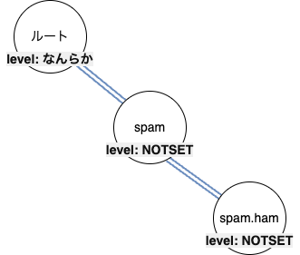

ライブラリ開発者に贈る「ロギングで NullHandler 以外はいけません」
ライブラリ開発者に贈る「ロギングで NullHandler 以外はいけません」
- Event:
PyCon mini Shizuoka 2024 continue
- Presented:
2025/02/08 nikkie
振替開催、誠にありがとうございます🫶
引き続き盛り上がって参りましょう！
お前、誰よ（👉Appendix）
機械学習エンジニア・LLM・自然言語処理（We're hiring!）
Python歴は7年。PyConで登壇多数
アンケート（何度でも挙げよう）
logging.warning()やlogging.error()したことある🙋♂️logging.basicConfig()したことある🙋♀️logging.getLogger()したことある🙋
本トークの対象者
Python標準ライブラリのloggingモジュールを 触ったことがある
loggingモジュールの中身はよく分からなくて全然OK👌
皆さんに質問です
あなたはPythonで
importして使いたいコードを書いています（例：ライブラリ）その中で ロギング 、どう実装しますか？
import する予定のコードの中でのロギング
logging.warning()（など）❓logging.basicConfig()❓logging.getLogger()❓
結論：「NullHandler 以外はいけません」
import logging
logger = logging.getLogger(__name__)
logger.addHandler(logging.NullHandler())
公式ドキュメント📄「ライブラリのためのロギングの設定」
すべて 公式ドキュメント に書いてあります！
しかし、観測範囲ではライブラリ作成者に気づかれていない印象...😫
📄の付いたリンクは、公式ドキュメントへのリンク
（別のemoji：🏃♂️は本編では飛ばします）
Logging クックブックの「避けるべきパターン」にも
ライブラリ内でロガーに NullHandler 以外のハンドラーを追加する 📄
(略) ログ出力をカスタマイズするのはライブラリ開発者ではなく、アプリケーション開発者の責務です。
ライブラリではオススメしません（ぶっぶー🙅♂️）🏃♂️
logging.basicConfig()logging.warning()logger = logging.getLogger(__name__)
logger.addHandler(logging.StreamHandler())本トークのメッセージ（Takeaway）
ライブラリ開発者は ロガー を用意し、 何もしないハンドラ を設定しよう
アプリケーション開発者は ルートロガー を設定し、 propagate を利用してログを表示しよう
斜体を解説していきます
本トークの構成
ライブラリ開発者へ
アプリケーション開発者へ
落ち穂拾い
本トークで扱うloggingモジュール
ロガー
ハンドラ
フォーマッタ
フィルタ（Appendixのみ）
先行発表：loggingの構成要素（🎥 ）🏃♂️
1️⃣ライブラリ開発におけるロギングの実装
あなたが作るライブラリにロギングをどう仕込むか
このパートで扱うloggingモジュール
ロガー
レベル
ログレコード
ハンドラ
フォーマッタ
ライブラリのためのロギングの設定 📄の2点
logging.getLogger(...)（ロガー）logger.addHandler(...)（ハンドラ）
logging.getLogger(__name__).addHandler(logging.NullHandler())1️⃣-1️⃣ logging.getLogger(...) 📄
指定された名前のロガーを返します。
ロガーの持つメソッド
debug()info()warning()error()critical()
logging を使うとき 📄（基本 logging チュートリアル）
開発者は ロガーを操作 すればOK
getLogger(...)でロガーインスタンスを得るロガーインスタンスのメソッドを呼び出してロギング
logger.warning("ちょっとヤバいよ")
logger.error("ヤバイよ。マジヤバイよ")「ちょっとヤバいよ」はいけません 🏃♂️
ログのメッセージに どんな情報を含めるか は、このトークの範囲外
参考 JJUG CCC 2024 Fall 役立つログに取り組もう
そもそも、なぜロギングする？
try:
大事な処理()
except Exception as ex:
logger.warning("Raised %s", repr(ex))開発者は イベントの発生を記録 する
ソフトウェアの開発者は、特定のイベントが発生したことを示す logging の呼び出しをコードに加えます。
イベントには レベル（重要性） も含む
イベントには、開発者がそのイベントに定めた重要性も含まれます。重要性は、レベル (level) や 重大度 (severity) とも呼ばれます。
ロギングレベル 5つ
DEBUGINFOWARNINGERRORCRITICAL
logging を使うとき 📄（基本 logging チュートリアル）
開発者はイベントを重要性込みで記録
ロガーには重要性（レベル）を冠したメソッド
開発者はイベントを表す ログメッセージ を渡す
logger.warning("ちょっとヤバいよ")
logger.error("ヤバイよ。マジヤバイよ")ロガーもレベルを持つ
ログが記録されるのは、 ロガーの持つレベル以上 の重要性のイベント
level よりも深刻でないログメッセージは無視されます（Logger.setLevel 📄）
例：ログが記録される場合
WARNING レベルのロガー logger は
logger.warning()は記録するlogger.info()は記録しない
開発者は記録したくても、記録されない場合がある！？
例：
WARNINGレベルのロガーにlogger.info()ポイントは ロガーのレベルは外から変えられる ということ（後述）
ログレコード 🏃♂️
LogRecord インスタンスは、何かをログ記録するたびに Logger によって生成されます。
ロガーに渡されるログメッセージ（文字列）は、 ログレコードとなって処理される
ロガーの名前について
getLogger(__name__) という呼び出し方の話
ドット（ピリオド）区切り
ロガー名は、何でも望むものにでき、ロギングされたメッセージが発生した場所を指し示します。（上級ロギングチュートリアル 📄）
logging.getLogger("spam")
logging.getLogger("spam.ham") # 名前には . も使えますロガーの親子関係
logger = logging.getLogger("spam.ham")spam.hamロガーの 親 にあたるのがspamロガーすべてのロガーの親 ルートロガー （引数渡さず
logging.getLogger()）
ロガーの親子関係
{kind=link}
logging.getLogger(__name__)
このコードで モジュールレベルのロガー インスタンスを得た
ロガー名だけで、どこでイベントのログが取られたか、直感的に明らかになります。（上級ロギングチュートリアル 📄）
__name__
モジュールの名前（3.2.9. モジュール 📄）
『Python Distilled』1.18
import mylib➡️"mylib"（ドットつなぎになりえる）スクリプトとして実行 ➡️
"__main__"
同名のロガー 🏃♂️
与えられた名前に対して、この関数はどの呼び出しでも同じロガーインスタンスを返します。 (logging.getLogger(...) 📄)
シングルトン なので都度 getLogger ！（避けるべきパターン 📄も参照）
>>> logging.getLogger("mylib") is logging.getLogger("mylib")
Trueロガー まとめ🥟 ここまでで ロギングできます
import logging
logger = logging.getLogger(__name__)
def example():
logger.warning("ちょっとヤバいよ")
from mylib import example
example()
ちょっとヤバいよ1️⃣-2️⃣ logger.addHandler(...)
ハンドラは、(ロガーによって生成された) ログ記録を適切な送信先に送ります。（上級ロギングチュートリアル 📄）
ログ記録＝ログレコード（原語 log records）
ロガーはハンドラを持つ
1つのロガーが 0個以上のハンドラを持つ
ハンドラはログレコードを出力先に振り分ける
ストリーム
ファイル
ログメッセージの流れ 🏃♂️
logger.warning("<ログメッセージ>")開発者はロガーのメソッドを呼び出してイベントを記録
ロガーの持つレベル以上の呼び出しのとき、ロガーは ログレコード を作成
ロガーはハンドラにログレコードを渡し、ハンドラがログを出力
ログの出力先に応じたハンドラ
ストリーム StreamHandler
ファイル FileHandler
まだまだあります：便利なハンドラ 📄（ログファイルのローテーションなど）
先のコードはなぜロギングできたか
import logging
logger = logging.getLogger(__name__)
def example():
logger.warning("ちょっとヤバいよ")
ロガーにハンドラを指定していない
ハンドラを指定しないとき
イベントは、 lastResort に格納された「最終手段ハンドラ」を使用して出力されます。
最終手段ハンドラ によるログ出力
ちょっとヤバいよレベル
WARNING以上のログメッセージが、標準エラー出力に表示されるフォーマットはなし
常に最終手段ハンドラを使わなきゃいけない？
何らかの理由でロギング設定がなされていないときにメッセージを表示 させたくない のであれば、ライブラリのトップレベルのロガーに何もしないハンドラを取り付けられます。
NullHandler
何もしない ハンドラ
https://docs.python.org/ja/3/library/logging.handlers.html#logging.NullHandler
最終手段ハンドラの出番にはしたくない
ライブラリのロガーになにかハンドラを持たせよう
何もしないハンドラ （
NullHandler）の出番！
最終手段ハンドラの出番はなく、ログ出力はない
import logging
logger = logging.getLogger(__name__)
logger.addHandler(logging.NullHandler())
def awesome():
logger.warning("ちょっとヤバいよ")
まとめ🥟 ライブラリ開発におけるロギングの実装
logging.getLogger(__name__).addHandler(logging.NullHandler())あなたのライブラリ用のロガーインスタンスを得よう
最終手段ハンドラを望まない場合、
NullHandlerを持たせよう
2️⃣アプリケーション開発におけるロギングの実装
ロギングが仕込まれたライブラリをどう使うか
このパートで扱うloggingモジュール
ロガー
ルートロガー
propagate
ハンドラ
フォーマッタ
アプリケーション開発者がログ出力を カスタマイズ！
ハンドラーやフォーマッター (略) を追加してログ出力をカスタマイズするのは (略)、アプリケーション開発者の責務です。
ログ出力のカスタマイズ 2通り
ルートロガーを設定 （👈主な話題）
ライブラリのロガーを触る
ルートロガーを設定する
アプリケーション開発者に提供される手段が logging.basicConfig()
logging.basicConfig() 📄
デフォルトの Formatter を持つ StreamHandler を生成してルートロガーに追加し、ロギングシステムの基本的な環境設定を行います。
logging.basicConfig() にここで関わる概念
ロギングレベル
フォーマッタ
他の要素は公式ドキュメントをどうぞ
ルートロガーのレベルを設定
logging.basicConfig(level=logging.WARNING)ロガーの持つレベル以上の重要性のイベントがログに記録される（再掲）
フォーマッタ
logging.basicConfig(format="%(levelname)s:%(name)s:%(message)s")ハンドラは1つのフォーマッタを持つ
ハンドラの出力に適用される 書式の設定
書式設定に使える属性名 🏃♂️
format="%(asctime)s | %(levelname)s | %(name)s:%(funcName)s:%(lineno)d - %(message)s"時刻や関数名など、ログメッセージより情報が多い！（ログレコードをフォーマット するため）
ルートロガーをカスタマイズ
アプリケーション開発者 （ライブラリを使う側）が好きに 決められます
ロギングレベル
ハンドラ & フォーマッタ
ルートロガーを設定してライブラリのログを出力
propagate （伝播）
ロガーの propagate 属性📄
この属性が真と評価された場合、このロガーに記録されたイベントは、このロガーに取り付けられた全てのハンドラに加え、上位 (祖先) ロガーのハンドラにも渡されます。
ロガーの親子関係（再び）
{kind=link}
propagate（伝播）
spamロガーのロギングレベル以上のメソッドが呼ばれた例：ロガーのレベルは
WARNINGで、warning()メソッドが呼ばれた
そのログレコードは 親のロガーに伝播 し、親のハンドラにも渡る
📌 NullHandler + basicConfig + propagate
mylibロガーのロギングレベル以上のメソッドが呼ばれたmylibロガーのハンドラ（NullHandler）が処理（するが出力はない）親のルートロガーに伝播し、 ルートロガーのハンドラで処理して出力される
ドキュメント propagate の注釈📄より
一般的なシナリオでは、ハンドラをルートロガーに対してのみ接続し、残りは propagate にすべて委ねます。
ロガー 📄（上級ロギングチュートリアル）🏃♂️
子ロガーはメッセージを親ロガーのハンドラに伝えます。(略) トップレベルのロガーのためのハンドラだけ設定しておいて必要に応じて子ロガーを作成すれば十分です。
待って🤚 ライブラリのロガーのレベルって？
今一度 ライブラリ開発者向け の話になります
NullHandler 以外はいけません（結論・再掲）
import logging
logger = logging.getLogger(__name__)
logger.addHandler(logging.NullHandler())
ライブラリのロガーに ロギングレベルは設定していない
レベルを設定していないライブラリロガーのレベルは❓
DEBUGINFOWARNINGERRORCRITICAL
ロギングレベル NOTSET
ロガーが生成された際、レベルは NOTSET (略) に設定されます。
Logger.setLevel 📄より
NOTSET とは
もしロガーのレベルが NOTSET ならば、祖先ロガーの系列の中を NOTSET 以外のレベルの祖先を見つけるかルートに到達するまで辿っていく
Logger.setLevel 📄より（「親ロガーに委譲」）
NOTSET のイメージ

{kind=link}
ライブラリのロガーにロギングレベルを設定したいとき
親をそのまた親へとたどっていき、最初に見つかった
NOTSET以外のレベルになる、ということ（ロギングレベル 📄）mylibロガーは、親の ルートロガーに設定したレベル となる！
拙ブログより ロギングレベル NOTSET 🏃♂️
propagate まとめ🥟 ライブラリのロギング
import logging
logger = logging.getLogger(__name__)
logger.addHandler(logging.NullHandler())
def awesome():
logger.info("想定通り")
例：ルートロガーのロギングレベルが WARNING だと出力されない
import logging
from mylib import awesome
logging.basicConfig(level=logging.WARNING)
awesome()
mylib ロガーも WARNING レベル
例：ルートロガーのロギングレベルが DEBUG だと 出力される
import logging
from mylib import awesome
logging.basicConfig(level=logging.DEBUG)
awesome()
INFO:mylib:想定通りmylib ロガーも DEBUG レベル
違いはルートロガーのロギングレベル
ライブラリのコードは同じ
ライブラリのロガーはレベル
NOTSETで、ルートロガーのレベルを参照ライブラリを利用するアプリケーションコードでカスタマイズした
まとめ🥟 アプリケーション開発におけるロギングの実装
logging.basicConfig(level=logging.DEBUG, format="%(levelname)s:%(name)s:%(message)s")ライブラリを使う側の都合で、ルートロガーを設定
ライブラリのロガーは ルートロガーのレベルを参照 し、propagateで ルートロガーのハンドラでログ出力
propagateは 親ロガーのレベルによらない 🏃♂️
メッセージは、祖先ロガーのハンドラに直接渡されます - 今問題にしている祖先ロガーのレベルもフィルタも、どちらも考慮されません。
propagateで祖先ロガーのレベルが考慮されない例 🏃♂️
import logging
from mylib import example
logging.basicConfig(
level=logging.WARNING,
format="%(asctime)s | %(levelname)s | %(name)s:%(funcName)s:%(lineno)d - %(message)s",
)
logger = logging.getLogger("mylib")
logger.setLevel(logging.INFO)
example()
2025-02-07 12:16:19,804 | INFO | mylib:example:7 - 想定通り
ライブラリのロガーを触る 🏃♂️
ロガーは、アプリケーションコードが直接使うインターフェースを公開します。
ライブラリのロガーを触ってログ出力をカスタマイズ 🏃♂️
アプリケーションコードで
getLogger("mylib")し、レベル・ハンドラ・フォーマッタを設定
3️⃣落ち穂拾い
ライブラリで
NullHandlerを使わない（アンチパターン）Logging Flow
3️⃣-1️⃣ ライブラリのロギングのアンチパターン
なぜ「NullHandler 以外はいけません」なのか
⚠️ NullHandler 以外のハンドラを設定してみる
import logging
logger = logging.getLogger(__name__)
logger.addHandler(logging.StreamHandler())2重出力😱
logging.basicConfig(
level=logging.DEBUG,
format="%(asctime)s | %(levelname)s | %(name)s:%(funcName)s:%(lineno)d - %(message)s",
)想定通り
2024-08-31 14:16:34,968 | INFO | antipattern_logging.add_non_nullhandler:awesome:8 - 想定通り2重出力の裏にpropagate
ライブラリロガーのロギングレベル以上のメソッドが呼ばれた
ライブラリロガーのハンドラ（
StreamHandler）が処理して出力親のルートロガーに伝播し、 ルートロガーのハンドラでも処理 して出力
ライブラリのためのロギングの設定 の注釈📄
ライブラリのロガーには、 NullHandler 以外のハンドラを追加しない ことを強く推奨します。これは、ハンドラの設定が、あなたのライブラリを使うアプリケーション開発者にも伝播するからです。
もう1例：ライブラリがルートロガーを触る
これもやってはいけません
⚠️ ライブラリで basicConfig()
import logging
logging.basicConfig(
level=logging.DEBUG, format="%(levelname)s:%(name)s:%(message)s"
)basicConfig() がルートロガーを設定するのは「一度だけ」
(略) ルートロガーに設定されたハンドラがあれば何もしません。(logging.basicConfig() 📄)
ライブラリがルートロガーにハンドラを設定してしまうと、 アプリケーションコードで呼び出しても何も起こらない 😭（詳しくは ブログ記事 に）
ライブラリではルートロガーは触らない
あなたのライブラリから ルートロガーへ直接ログを記録しない ことを強く推奨します。
logging.warning() なども全部 basicConfig() を呼んでます
（補足：ルートロガーがハンドラを持たない場合は）ルートロガーの debug メソッドを呼び出す前に basicConfig() が呼ばれます。 (📄 logging.debug())
basicConfig() 同様にライブラリで使ってはいけません
3️⃣-2️⃣ Logging Flow
Logging Flow 📄を読み解く
loggingモジュールの構成要素
ロガー
ハンドラ
フォーマッタ
フィルタ（👉 Appendix）
ロガーを構成する要素
ロギングレベル
ハンドラ（0個以上）
フィルタ （0個以上）
ハンドラを構成する要素
ロギングレベル （👉 Appendix）
フォーマッタ（1個）
フィルタ （0個以上）
なぜこんなに構成要素がある？
組合せることで 柔軟なロギング を提供
IMO：まさにsimple（simpleはeasyのことではありません）
柔軟なロギングの例
例：ロガーに複数のハンドラを設定。ハンドラのロギングレベルを使って、レベルごとに異なる出力先へ出し分ける
それぞれのハンドラで設定されるレベルは、そのハンドラがどのメッセージを転送するべきか決めます。(ハンドラ（上級ロギングチュートリアル） 📄)
Logging Flow
構成要素がどのように組み合わさって動くかを示す
一例：propagate（ただし抜粋）
ライブラリのロガーのレベル以上の呼び出し
そのロガーのハンドラがログレコードを処理
ライブラリのロガーの親のハンドラにもログレコードが渡る（親のレベルは見ない）
propagate 抜粋して簡易版
flowchart LR
START[ロギング<br/>呼び出し] -->|"例 logger.info(...)"| cond1{ロガーの<br/>レベル以上の<br/>呼び出しか};
cond1 -->|はい<br/>=有効| node1[LogRecord<br/>作成];
node1 --> node2[現在のロガーの<br/>ハンドラへ<br/>渡す];
node2 --> cond3{現在のロガーの<br/>propagate属性は<br/>Trueか};
cond3 -->|はい=true<br/>=伝播する| cond4{親のロガー<br/>はあるか};
cond4 -->|はい=親ロガー<br/>がある| node3[親ロガーを現在の<br/>ロガーとする];
node3 --> node2;
読み込めてなさそうならリロードを。 完全版
まとめ🌯 ライブラリ開発者に贈る「ロギングで NullHandler 以外はいけません」
import logging
logger = logging.getLogger(__name__)
logger.addHandler(logging.NullHandler())
📣ライブラリのユーザが自由にロギングをカスタマイズできるようにしよう
そのための
NullHandlerpropagateを使って、 ユーザが設定するルートロガーのハンドラでログ出力
メッセージ（Takeaway）再掲 🏃♂️
ライブラリ開発者はロガーを用意し、 何もしないハンドラを設定 しよう
アプリケーション開発者はルートロガーを設定し、 propagateを利用してログを表示 しよう
ご清聴ありがとうございました
% uv run --python 3.12 --with happy-python-logging python -q
>>> from happy_python_logging import getLoggerForLibrary
>>> logger = getLoggerForLibrary("mylib")
>>> logger.handlers
[<NullHandler (NOTSET)>]Enjoy happy-python-logging ❤️
Appendix
お前、誰よ（詳細版）
PyCon JP 2021 座長
毎月の みんなのPython勉強会 スタッフ
Uberi/speech_recognition 8.4k⭐️ メンテナ
スライドの秘密 〜お前、誰よ 補足〜
attakeiさんの sphinx-revealjs に以下の 自作拡張 を組み合わせて実現
ハンドラのロギングレベル
結論のコード、
NullHandlerのレベルは NOTSETハンドラが生成された際、レベルは NOTSET (すべてのメッセージが処理される) に設定されます。
フィルタ
ロガーやハンドラに取り付けられる
フィルタは何をするのか
(略) name はロガーの名前を表します。指定されたロガーとその子ロガーのイベントがフィルタを通過できるようになります。(logging.Filter() 📄)
ロガーの階層構造が関係
例： logging.Filter("A.B")
例えば、'A.B' で初期化されたフィルタは、ロガー 'A.B', 'A.B.C', 'A.B.C.D', 'A.B.D' 等によって記録されたイベントは許可しますが、'A.BB', 'B.A.B' などは許可しません。
環境設定（このトークではスコープアウト）
dictConfigやfileConfig最初に読むなら『Python実践レシピ』17.4
ライブラリのロガーを触ってログ出力をカスタマイズ
本編で飛ばした🏃♂️ 拙ブログ Pythonのライブラリに用意されたロガーを設定してログを出力する（httpxを例に）
logging.config版 Pythonのライブラリに用意されたロガーをlogging.configで設定する（httpxを例に、辞書やYAMLで設定）
標準ライブラリ logging 以外の選択肢
標準ライブラリ logging
loguru
logbook
loguru
「Python logging made (stupidly) simple」と謳う
IMO：simpleというより easy 。未検証だがアプリケーション向けのような